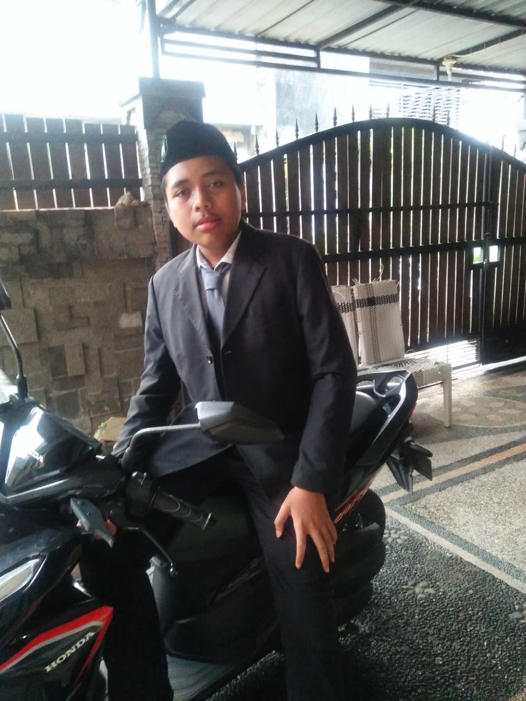

Web Developer & Student
Saya adalah Al Utomo, seorang pengembang web yang antusias dan mahasiswa yang sedang belajar. Saya menciptakan proyek pembelajaran ini untuk membantu orang lain memahami dasar-dasar web development. Dengan HTML, CSS, dan JavaScript, saya berusaha membuat konten edukasi yang mudah dipahami. Terima kasih telah mengunjungi halaman ini!